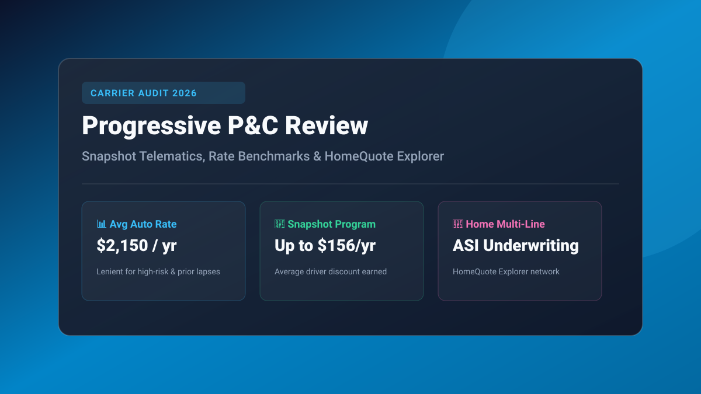

Key Takeaways at a Glance
- Average Rates: Full-coverage auto insurance averages $2,150/year ($179/month) for clean drivers, outperforming peers for high-risk drivers and prior ticket histories.
- Snapshot Telematics Reality: Drivers save an average of $156 annually, but roughly 18% of aggressive drivers or late-night commuters see rate increases.
- HomeQuote Explorer: Progressive underwrites homeowners policies primarily through its subsidiary ASI (Progressive Home) alongside an open network of affiliated third-party carriers.
- Name Your Price Tool: Unique feature allows drivers to adjust coverage limits and deductibles to match a pre-set monthly budget.

Benchmark Progressive Against Market Rates
Calculate your expected baseline premiums and see how raising your deductible or bundling home and auto changes your rates. Use our Auto Insurance Calculator and Home Insurance Calculator to project annual costs.
- 1. Progressive at a Glance: The Direct P&C Disruptor
- 2. Average Progressive Rates: Auto, Home & Multi-Line Bundles
- 3. Progressive Snapshot Telematics: Real Savings vs. Rate Hike Surcharges
- 4. Innovative Quoting: Name Your Price & HomeQuote Explorer
- 5. Claims Handling, Customer Service & J.D. Power Rankings
- 6. Progressive vs. Competitors: How It Stacks Up in 2026
- Frequently Asked Questions
1. Progressive at a Glance: The Direct P&C Disruptor
Founded in 1937, Progressive has grown into the second-largest personal auto insurer in the United States, commanding approximately 15% of the total private passenger auto insurance market. Progressive built its reputation as a technological pioneer—being among the first carriers to offer internet policy quoting, comparison rate charts against competitors, and usage-based telematics tracking.
In the Property & Casualty (P&C) space, Progressive operates as a hybrid provider: offering direct-to-consumer online policies alongside an expansive network of over 40,000 independent insurance brokers nationwide.
While widely renowned for its auto coverage, Progressive also markets homeowners, condo, renters, boat, commercial auto, and umbrella policies, making it a viable single-carrier solution for households seeking multi-line discounts.
2. Average Progressive Rates: Auto, Home & Multi-Line Bundles
Insurance rate filings across 50 state insurance departments reveal that Progressive’s pricing strategy focuses heavily on competitive rates for non-standard drivers (drivers with recent speeding violations, minor at-fault accidents, or credit blemishes) while remaining moderate for preferred pristine drivers.
Below is a national benchmark for typical Progressive personal insurance policies based on 2026 actuarial loss submissions:
| Coverage Type | National Average Annual Cost | Monthly Equivalent | Underwriting Profile / Benchmark |
|---|---|---|---|
| State Minimum Auto Liability | $790 – $920 | $66 – $77 / mo | Clean driver, minimum statutory liability limits |
| Full Coverage Auto (100/300/100) | $2,050 – $2,350 | $171 – $196 / mo | $500 comp/coll deductible, 2022 sedan |
| Auto (1 Speeding Violation) | $2,540 – $2,880 | $212 – $240 / mo | 15% lower surcharge than GEICO or State Farm |
| Homeowners (HO-3 $350k Rebuild) | $1,820 – $2,240 | $152 – $187 / mo | Underwritten via Progressive Home / ASI |
| Home & Auto Bundle (Multi-Policy) | $3,290 / total | $274 / mo total | Average 12% auto + 7% home multi-line discount |
3. Progressive Snapshot Telematics: Real Savings vs. Rate Hike Surcharges
Progressive Snapshot is a usage-based insurance (UBI) program available via mobile smartphone app or plug-in OBD-II port device. It monitors five core driving behaviors: hard braking (>7 mph/sec deceleration), rapid acceleration, late-night driving between 12:00 AM and 4:00 AM, trips per day, and handheld phone usage while moving.
Upon enrollment, Progressive awards an automatic initial discount averaging $25 to $50. After a 6-month tracking cycle, the policy permanently recalculates:
• The Upside: Calm, daytime suburban drivers save an average of $156 per year (up to 20% off comprehensive collision and liability premiums).
• The Risk Warning: Unlike State Farm Drive Safe & Save (which guarantees zero rate increases), Progressive Snapshot can and will increase your rates if your driving data demonstrates repeated hard stops, midnight commuting, or excessive mileage. In most states, roughly 15% to 18% of enrolled drivers experience a premium surcharge upon graduation.
4. Innovative Quoting: Name Your Price & HomeQuote Explorer
Two proprietary digital tools distinguish Progressive from legacy carriers like Allstate and State Farm:
1. The Name Your Price® Tool: Allows prospective policyholders to input their target monthly auto insurance budget (e.g., $110/month). Progressive’s quoting engine automatically models various liability limits, collision deductibles, roadside assistance add-ons, and rental car reimbursements to fit the user’s exact financial parameters.
2. HomeQuote Explorer® (HQX): Because homeowners insurance risk appetites vary drastically by state and catastrophe exposure, Progressive utilizes HQX to quote not just its own subsidiary (Progressive Home / ASI), but also affiliated regional carriers like Homesite, Foremost, and American Modern. This ensures homeowners in storm-prone states can still secure coverage through Progressive’s platform.
5. Claims Handling, Customer Service & J.D. Power Rankings
In J.D. Power’s annual US Auto Claims Satisfaction Study, Progressive regularly scores slightly below industry average, holding a rating of 855 to 865 on a 1,000-point scale. Policyholders praise Progressive’s rapid mobile photo estimating and Concierge Claim Centers (where Progressive adjusters handle drop-off, repair coordination, and car rental in one location).
However, Progressive receives customer complaints regarding automated total loss settlement valuations and deductible recovery timelines during subrogation claims with third-party carriers.
From a financial solvency perspective, Progressive maintains an exceptional A+ (Superior) financial strength rating from A.M. Best and an AA rating from Standard & Poor’s, ensuring rock-solid claims-paying ability even through multi-billion-dollar catastrophic weather seasons.
6. Progressive vs. Competitors: How It Stacks Up in 2026
Choosing between Progressive, State Farm, GEICO, and Allstate depends on your driving record and preferred customer service model:
| Feature / Factor | Progressive | State Farm | GEICO | Allstate |
|---|---|---|---|---|
| Best For | Drivers with prior tickets / Tech enthusiasts | Home & auto bundlers / Local agent care | Budget-conscious clean drivers | Drivers wanting claim satisfaction guarantees |
| Avg Auto Premium | $2,150 / yr | $2,080 / yr | $1,980 / yr | $2,380 / yr |
| Telematics Program | Snapshot (Can raise rates) | Drive Safe & Save (Discounts only) | DriveEasy (App-based) | Drivewise (Cashback rewards) |
| Home Insurance Underwriter | ASI / Progressive Home + Affiliates | State Farm Fire & Casualty | Third-party insurers (Travelers, Homesite) | Allstate Property & Casualty |
| A.M. Best Financial Rating | A+ (Superior) | A++ (Superior) | A++ (Superior) | A+ (Superior) |
Frequently Asked Questions: Progressive
Is Progressive insurance cheaper than GEICO and State Farm?
For drivers with a clean record, GEICO and State Farm are typically 5% to 10% cheaper than Progressive. However, for drivers with a recent speeding ticket, an at-fault fender bender, or a lapse in prior coverage, Progressive is frequently 15% to 20% cheaper than both competitors.
Can Progressive Snapshot increase my insurance rate?
Yes. In the majority of US states, if Progressive Snapshot records high frequencies of hard braking, excessive late-night driving between 12:00 AM and 4:00 AM, or rapid acceleration, your policy premium can increase upon renewal.
Does Progressive underwrite its own homeowners insurance?
Progressive underwrites homeowners insurance primarily through American Strategic Insurance (ASI), branded as Progressive Home. In high-risk states or specialized property types, Progressive quotes policies through affiliated third-party partners via HomeQuote Explorer.
What is the best way to lower my Progressive insurance rate?
The top methods to lower Progressive rates are: (1) Pay in full upfront for an 8% to 10% discount, (2) Bundle auto with home or renters insurance, (3) Raise your collision deductible from $500 to $1,000, and (4) Sign up for electronic paperless billing.
Compare Other Top Property & Casualty Carriers
State Farm Insurance Review
Local captive agent network, Drive Safe & Save, and bundle math.
Direct GiantProgressive Insurance Review
Snapshot telematics, Name Your Price, and ASI home underwriting.
Budget LeaderGEICO Insurance Review
Direct auto pricing, third-party home insurance, and DriveEasy.
Premium ProtectionAllstate Insurance Review
Claim Satisfaction Guarantee, Drivewise cash rewards & riders.